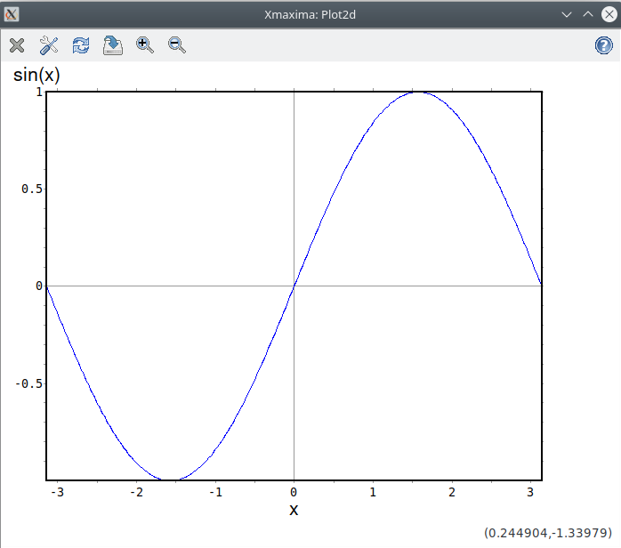
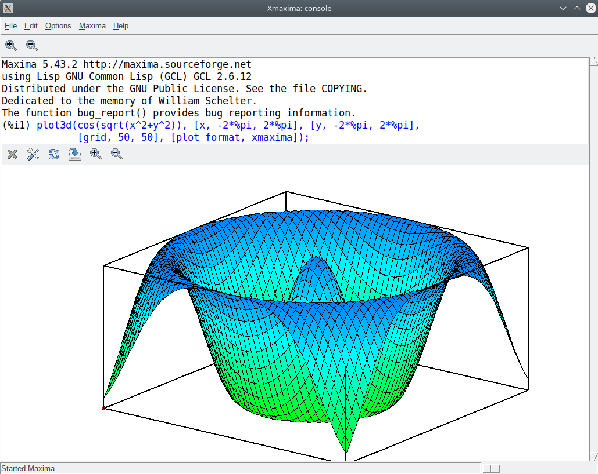
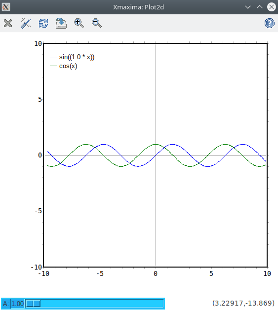

| [ << ] | [ < ] | [ Up ] | [ > ] | [ >> ] | [Top] | [Contents] | [Index] | [ ? ] |
Xmaxima can be used either directly or from Maxima, to plot 2d
and 3d graphs. From Maxima, it will be used by the functions
plot2d and plot3d, if the option [plot_format,
xmaxima] is used. There are other plotting functions in Maxima that
will only work with the xmaxima plot_format: plotdf, openplot_curves
and graph2d. All those plotting functions are documented in
the Maxima Reference Manual.
A command used to create a 2d xmaxima plot, for example:
plot2d(sin(x), [x, -%pi, %pi], [plot_format, xmaxima]);
creates a window with a menu bar with the following options:

By default, each plot will be opened in a new separate window. However,
the plot windows can be embedded into Xmaxima’s text window, by
selecting the option ‘Plot windows -> Embedded’ in the
Options menu, before the plot command is issued.

The 3d plot has a menu very similar to that obtained with
plot2d, but with one additional option: Rotate. Normally,
if you click on the plot, it will not be enlarged, as the 2d
plots. Clicking on the left button, while dragging the mouse, will
rotate the plot, allowing to control two angles: azimuth and elevation.
The menu option ‘Zoom’, will change that default behavior, making the mouse enlarge the plot, as in the 2d case. To return to the default behavior (the mouse makes the plot rotate), the Rotate button should be used.
If Xmaxima is executed from the command line, giving as argument the name of a file, it will open that file and interpret it as a plot command, with a syntax specific of Xmaxima. The graph generated by the commands in the file will be plotted in a plot window, and the main window of Xmaxima will not be opened and no communication with Maxima will be established. An example of the contents of a file that can be passed directly to Xmaxima is the following:
plot2d -xfun "sin(A*x);cos(x)" -yradius 10
-sliders {A=1:6} -parameters {A=1}
that file will generate a plot of a cosine function with fixed period, and a sine function with a period that can be changed by moving the slider that appears on the bottom.

the sliders option of xmaxima is one feature that cannot be accessed
directly from plot2d in Maxima. Other examples of input
files for xmaxima are the files maxoutNNNN.xmaxima (where NNNN
is the process id (an unique number) of the maxima process, that Maxima
creates; when Maxima is run from the command line, and a plotting
function that involves xmaxima is used, the data is not passed directly
to Xmaxima, but it is rather saved into that file and then xmaxima is
executed with the name of that file as argument.
The strings used in those files must be properly represented as Tcl/Tk strings.
| [ << ] | [ >> ] | [Top] | [Contents] | [Index] | [ ? ] |